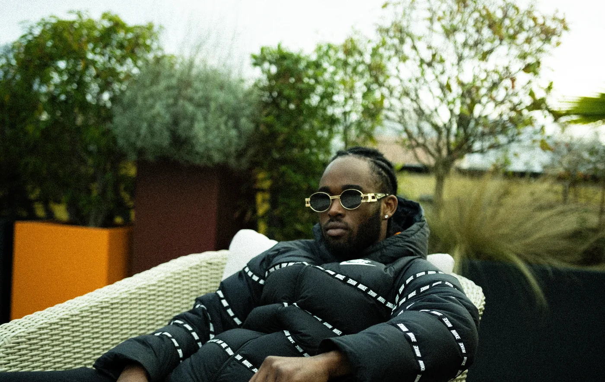

Binksfilms Les beaux arts du ghetto
Réalisateur
Films
Réalisateur
Plus de 100 projets.J’ai arrêté de compter.
Quand j’ai envie de faire un truc, je le fais. Les codes, je les regarde après. J’essaie, je cherche, je pousse les idées jusqu’à tomber sur des choses que j’avais parfois même pas prévues.
Ça fait plus de 10 ans que je filme. Projet après projet, j’ai appris en faisant.
BinksFilms s’est construit comme ça :
en faisant, encore et encore.

Contact
Chaque projet est différent. Quelques infos me suffisent pour comprendre le tien et te faire une proposition adaptée.
Ou directement
binksfilms@gmail.com